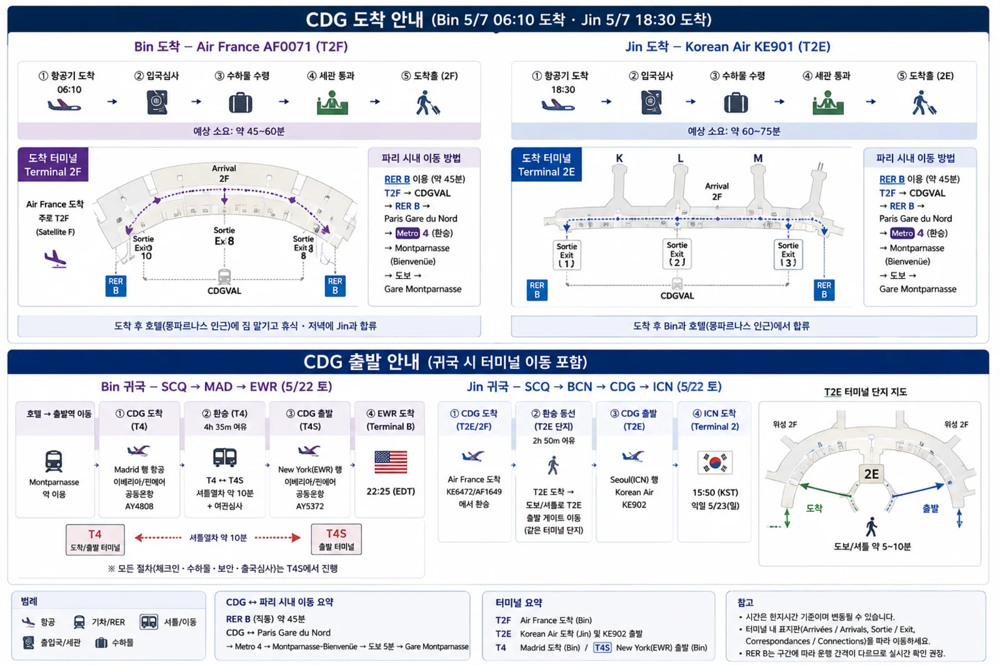
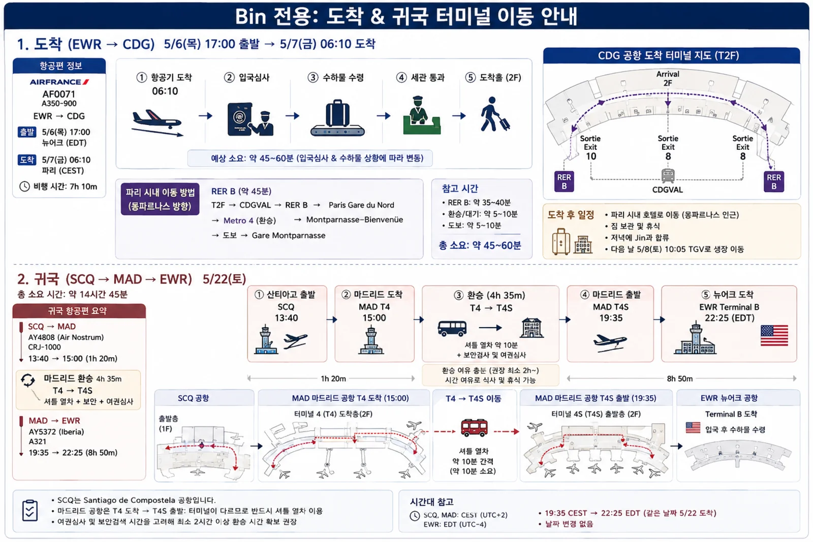
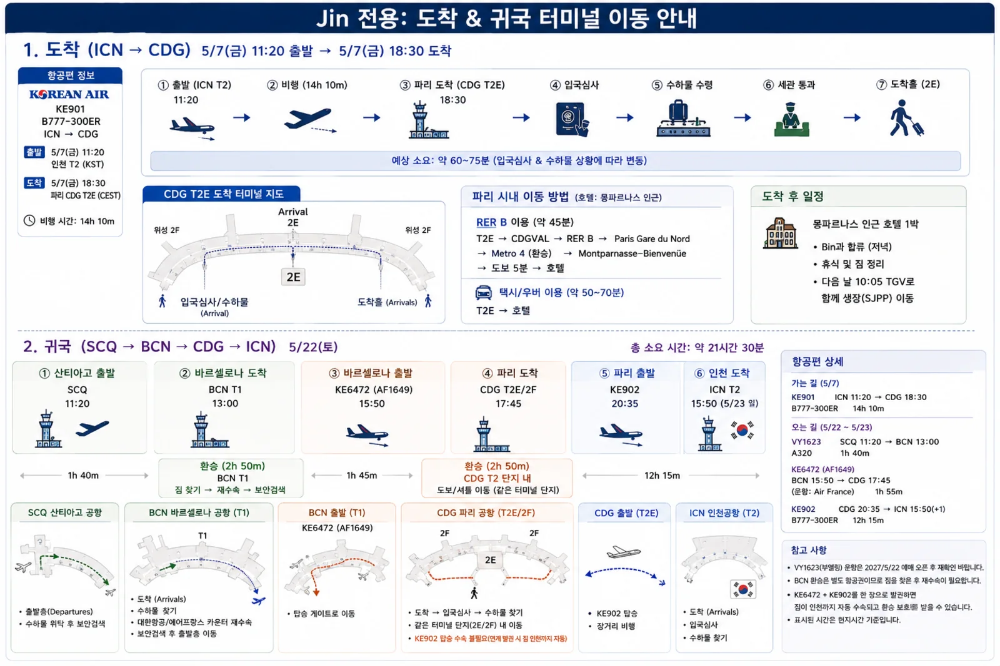

모든 시각은 현지시간입니다 (EDT 뉴어크 · CEST 유럽 · KST 한국).
완주 5/21(금) → 산티아고 1박 → 5/22(토) 귀국 기준이며,
아래 모든 편의 시간대 계산을 검증했습니다 — 결과는 맨 아래 ✔ 박스 참고.

5/7 CDG 도착 — 두 사람 모두 이 흐름을 거칩니다. Bin 06:10 도착(AF · T2E 계열) · Jin 18:30 도착(KE901 · T2E). 입국심사 → 수하물 → 세관 → Uber로 몽파르나스 호텔까지 문 앞 이동
가는 길BIN5/6 목 → 5/7 금
편명 · 기종
출발
도착
소요
AF071 에어프랑스 A350-900 좌석 22D 통로
EWR 뉴어크 5/6 목 17:00 EDT
CDG 파리 5/7 금 06:10 CEST
7h 10m
Bin은 새벽 6시 도착 — 시내로 이동해 호텔에 짐 맡기고 쉬다가,
저녁에 Jin과 호텔에서 합류하는 편이 CDG에서 12시간 기다리는 것보다 낫습니다.
CDG → 몽파르나스 호텔 BIN · 06:10 도착 · 두 가지 길
① CDG Express + Métro 4
② Uber · 택시
경로
CDG T2 → CDG Express → Gare de l'Est → Métro 4(보라) → Montparnasse-Bienvenüe
T2E 도착층 → 호텔 문 앞
시간
20분 + 환승 10분 + 15분 = 약 45~55분
45~75분 (아침 출근 정체)
비용
€25 + Métro €2.5 ≈ €28
택시 정액 €56 (우안) · Uber €55~75
운행
05:00~24:00 · 15분마다 · 무정차
24시간
짐
큰 짐 공간 있음 · Gare de l'Est 환승은 계단·에스컬레이터, Montparnasse 역은 크고 출구가 멀 수 있음
차에 그대로
메모
2027-03-28 개통 예정 — 우리 출발 6주 전. 개통이 밀리면 ② 로. 개통 뒤에도 초기엔 운행 간격·요금이 바뀔 수 있으니 4월에 다시 확인
현재 기본안. 06:10 도착이라 정체 전이라 빠른 편
정하는 기준 — CDG Express 가 예정대로 열리면 ① (반값, 정체 없음, 15분마다). 새벽 도착이라 Gare de l'Est 에서 4호선까지 짐 들고 걷는 것만 감수하면 됩니다.
개통이 밀리거나 파업이면 ②. RER B(€13, 약 50분)는 짐 있으면 권하지 않습니다 — 계단 많고 혼잡.
Jin 은 18:30 도착이라 퇴근 정체를 피하려면 ①이 더 유리합니다 (Gare de l'Est 22:00 이전이면 문제 없음).
가는 길JIN5/7 금
편명 · 기종
출발
도착
소요
KE901 대한항공 B777-300ER 좌석 29G 통로
ICN 인천 T2 5/7 금 11:20 KST
CDG 파리 T2E 5/7 금 18:30 CEST
14h 10m
18:30 도착 → 몽파르나스 인근 호텔에서 Bin과 합류, 파리 1박.
다음 날 5/8(토) 10:05 몽파르나스發 TGV로 함께 생장 이동 (섹션 Ⅳ 참고).

BIN — 가는 길 EWR → CDG · 귀국 SCQ → MAD(T4 → T4S 환승) → EWR. 마드리드 T4에서 T4S 로는 셔틀 열차로 이동하며 출국심사가 그 사이에 있습니다
귀국BIN5/22 토 · SCQ → MAD → EWR · 총 14h 45m
편명 · 기종
출발
도착
소요
IB1136 이베리아 운항: Air Nostrum · CRJ-1000 좌석 11A 창가
SCQ 산티아고 5/22 토 13:40 CEST · 단일 터미널
MAD 마드리드 T4 5/22 토 15:00 CEST
1h 20m
🔁 마드리드 환승 4h 35m — T4 → T4S (셔틀 열차 이동 + 여권심사) · 여유 충분
IB0327 이베리아 A321neo/XLR 좌석 22C 통로
MAD 마드리드 T4S 5/22 토 19:35 CEST
EWR 뉴어크 T B 5/22 토 22:25 EDT
8h 50m
예약 정보BIN에어프랑스
예약번호YM····F
승객명BIN
항공권 번호057 ···· 770
운임Economy Optimal
번호는 일부만 적어 두었습니다 —
이 페이지는 링크만 알면 누구나 볼 수 있으므로 예약번호와 항공권 번호 전체는 올리지 않습니다.
전체 번호는 각자 휴대폰이나 메일에서 확인하세요.
airfrance.us 에서
예약번호와 성으로 조회됩니다. 좌석 지정과 여권 정보 입력을 미리 해 두세요.
체크인
온라인 체크인출발 30시간 전부터 열립니다
미국 출도착편24시간 전부터 (EWR 출발·도착편)
마감출발 1시간 전 — 늦으면 좌석이 풀립니다
가는 길(5/6 EWR)과 귀국(5/22 SCQ) 모두
전날 저녁에 미리 체크인해 두세요. 순례 중에는 인터넷이 불안정할 수 있으니
귀국편은 아르수아나 산티아고에서 와이파이가 될 때 해 두는 편이 안전합니다.
좌석
22D통로AF071 · EWR → CDG
D 는 가운데 블록의 왼쪽 통로입니다.
밤 비행 7시간 10분에 옆 사람을 넘지 않고 드나들 수 있습니다.
창가는 아니지만 잠자기에는 통로가 낫습니다.
11A창가IB1136 · SCQ → MAD
CRJ-1000 은 좌우 2석씩입니다. A 는 왼쪽 창가이고
1시간 20분 구간이라 어느 자리든 큰 차이는 없습니다.
22C통로IB0327 · MAD → EWR
C 는 왼쪽 블록의 통로입니다. 8시간 50분 비행에
화장실 오가기 편한 자리입니다. 앞의 21열은 다리 공간이 넓은 XL 열이라
앞이 트여 보이지만, 22열 자체는 일반 간격입니다.
좌석은 예약 조회에서 바꿀 수 있습니다.
두 사람이 붙어 앉으려면 Jin 의 좌석과 함께 조정하세요.
기내 수하물 — 구간마다 다릅니다
가는 길 5/6 · EWR → CDG에어프랑스
기내 가방 55 × 25 × 35 cm 손잡이·바퀴 포함
소지품 가방 40 × 30 × 15 cm 앞좌석 아래
무게 합계12 kg 까지
귀국 5/22 · SCQ → MAD → EWR이베리아 운항
기내 가방 56 × 40 × 25 cm 규격은 더 큼
소지품 가방 40 × 30 × 15 cm 앞좌석 아래
무게10 kg 까지 14 kg 옵션 사용 불가
귀국편 무게 기준이 더 빡빡합니다. 가는 길은 12 kg 인데 귀국은 10 kg 이고,
14 kg 짜리 기내 수하물 옵션은 아예 쓸 수 없습니다.
산티아고에서 기념품이 늘기 쉬우니 돌아올 때 2 kg 여유를 미리 잡아 두세요.
확인이 필요합니다 — 위탁 수하물
예약 화면에 기내 수하물만 나와 있습니다. 패니어와 장비를 부칠 위탁 수하물이 포함되어 있는지,
없다면 몇 개까지 얼마에 추가할 수 있는지 출발 전에 확인하세요.
자전거는 생장에서 빌리므로 자전거 자체를 부칠 일은 없습니다.
귀국 경로 지도 5/22 토 · Bin 서쪽 · Jin 동쪽
BIN SCQ→MAD→EWR (서쪽) · 총 14h45JIN SCQ→BCN→CDG→ICN (동쪽) · 총 21h30
지리는 근사치 — 두 사람이 산티아고 공항에서 각자 출발(Jin 11:20 · Bin 13:40)해
반대 방향으로 지구를 돕니다. 장거리 구간(뉴어크行·인천行)은 방향 화살표로만 표시했습니다.
귀국JIN5/22 토 · SCQ → BCN → CDG → ICN · 총 21h 30m
편명 · 기종
출발
도착
소요
VY1623 부엘링 A320 · 예약 완료 좌석 5C 통로 · Fly Light
SCQ 산티아고 5/22 토 11:20 CEST
BCN 바르셀로나 T1 5/22 토 13:00 CEST
1h 40m
🔁 바르셀로나 환승 2h 50m — 둘 다 T1 · 부엘링은 별도 발권이라 짐을 찾아 에어프랑스 카운터에서 다시 부쳐야 합니다 · 시간은 넉넉하지만 늦어도 KE 가 기다려 주지 않습니다
KE6472 대한항공 공동운항 운항: 에어프랑스 AF1649 · A320 좌석 10D 통로
BCN 바르셀로나 T1 5/22 토 15:50 CEST
CDG 파리 T2F 5/22 토 17:45 CEST
1h 55m
🔁 파리 환승 2h 50m — T2F 도착 → T2E 출발. 같은 2터미널 단지지만 2F 는 솅겐, 2E 는 비솅겐이라 그 사이에 출국심사가 있습니다. 통로로 이어져 있어 30~45분이면 충분하고, 짐은 KE 통합 발권이라 인천까지 자동 수속됩니다
KE902 대한항공 B777-300ER 좌석 30G 통로
CDG 파리 T2E 5/22 토 20:35 CEST
ICN 인천 T2 5/23 일 15:50 KST
12h 15m
BCN→ICN 구간은 대한항공 한 장(KE6472 + KE902)입니다 —
AF1649 좌석도 대한항공 앱에서 배정되었습니다. 짐이 인천까지 자동 수속되고 환승 보호도 받습니다.
갈 때(KE901)와 올 때(KE902) 모두 파리를 지나는 대칭 일정입니다.
다만 첫 구간 VY1623 만 따로 산 표라 그 부분은 보호를 받지 못합니다.
예약 정보
승객명JIN
대한항공 예약번호FO··43
항공권 번호180 ···· 418
부엘링 (별도)CMT···QQ
예약등급 · 운임X 일반석 · YSM
발권 형태보너스 항공권
위탁 수하물1개 (KE·AF 구간)
항공권 유효기간2027-08-18
번호는 일부만 적어 두었습니다 — 이 페이지는 링크만 알면 누구나 볼 수 있습니다.
전체 번호는 각자 메일과 앱에서 확인하세요.
탑승수속 마감출발 1시간 전 · 공항 도착은 2시간 전 권장
사전 배정 좌석출발 1시간 30분 전까지 탑승권을 받지 않으면
29G·30G 가 다른 사람에게 넘어갈 수 있습니다
보너스 항공권마일리지 적립 0 · 좌석 승급 불가
보너스 항공권이라 조건이 일반 항공권과 다릅니다 —
재발행 수수료 3만원, 환불은 출발 91일 이전 무료 / 90일 이내 3,000마일 공제.
예약해 놓고 그냥 안 타면 예약부도 위약금 10만원(출국장 입장 후 취소는 20만원)이 붙습니다.
확인이 필요합니다 — VY1623 위탁 수하물
운임이 Fly Light 입니다. 부엘링의 Fly Light 는 기내 수하물만 포함하고
부치는 짐은 들어 있지 않습니다. 패니어와 순례 장비를 부치려면
출발 전에 위탁 수하물을 따로 추가하세요 — 공항에서 사면 훨씬 비쌉니다.
BCN 에서 어차피 짐을 찾아 다시 부쳐야 하므로, SCQ 에서 부칠 짐이 있는지 미리 정리해 두시면 좋습니다.
참고
BCN 이후 구간(AF1649 · KE902)은 KE 항공권에 위탁 수하물 1개가 포함되어 있습니다.
모자란 것은 SCQ → BCN 구간뿐입니다.
보조배터리 · 노트북 · 카메라는 부치지 마세요.
대한항공 규정상 위탁이 불가하며 반드시 기내로 들고 타야 합니다.
자전거 라이트와 가민 충전용 배터리도 여기에 해당합니다.
좌석 — 네 구간 모두 통로
29G통로KE901 · ICN → CDG
3-3-3 배열에서 G 는 오른쪽 블록의 왼쪽 통로입니다.
앞 28열이 비상구 열이라 앞이 트여 있습니다. 14시간 비행에 드나들기 좋습니다.
5C통로VY1623 · SCQ → BCN
앞쪽 5열이라 내릴 때 빠릅니다.
BCN 에서 짐을 찾아 다시 부쳐야 하니 조금이라도 일찍 나오는 편이 낫습니다.
10D통로AF1649 · BCN → CDG
D 는 오른쪽 블록의 통로입니다.
앞쪽 4~8열은 유료 좌석이라 9열부터가 무료 구간입니다.
30G통로KE902 · CDG → ICN
갈 때 29G, 올 때 30G 로 같은 자리 계열입니다.
12시간 15분 야간 비행이라 통로가 편합니다.

JIN — 가는 길 ICN → CDG · 귀국 SCQ → BCN → CDG T2 환승 → ICN. BCN 이후가 모두 대한항공 편명이라 한 장으로 발권하면 짐이 인천까지 자동 수속됩니다
✔ 시간대 검증 결과
각 편의 출발·도착 현지시각을 UTC로 환산해 소요시간과 대조했습니다
(EDT=UTC−4 · CEST=UTC+2 · KST=UTC+9). 다섯 개 일정 모두 계산이 정확히 맞습니다:
✔ AF071: 17:00 EDT +7h10 = 06:10 CEST 익일 — 일치
✔ KE901: 11:20 KST +14h10 = 18:30 CEST 당일 — 일치
✔ IB0327 (Bin): 19:35 CEST +8h50 = 22:25 EDT 당일(5/22) 도착 — 일치, 날짜 안 넘어감
✔ VY1623 (Jin): 11:20 +1h40 = 13:00 CEST — 일치
✔ KE6472/AF1649 (Jin): 15:50 +1h55 = 17:45 CEST — 일치
✔ Jin 총 소요: SCQ 11:20 CEST → ICN 15:50 KST(익일) = 21h30 — 일치
✔ 요일: 2027-05-22는 토요일, 05-23은 일요일 — 표기와 일치
환승 여유는 모두 안전권(각 2h50)이고, 남은 확인 사항은 두 가지입니다:
① VY1623의 2027/5/22 운항 확정 — 부엘링 SCQ–BCN 노선 자체는 주 28편으로 확실하지만,
해당 날짜의 이 시각 편은 예매 오픈(통상 6~9개월 전) 후 확정하세요. 늦은 아침 대체편도 많은 노선입니다.
② KE6472(BCN→CDG)와 KE902(CDG→ICN)를 대한항공 한 장으로 발권하면 짐 인천 직행 + 환승 보호 —
부엘링 구간만 별도이고 BCN에서 짐 재수속하면 됩니다(2h50이면 충분).
자전거는 생장에서 렌탈 → 산티아고 대성당 인근 반납(편도)이라 비행기·기차에 실을 필요가 없습니다.
5월 성수기 원웨이 렌탈은 조기 마감 — 2대를 미리 예약하고 패니어·헬멧·수리 키트 포함 여부를 확인하세요.
5/22 아침 산티아고 공항으로 함께 이동한 뒤, Jin이 11:20에 먼저 출발(동쪽 바르셀로나行)하고
Bin이 13:40에 출발(마드리드行)합니다 — 서로 반대 방향으로 귀국하는 셈입니다.